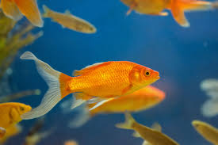
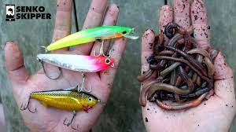

Welcome to the Bait Shop
Welcome to our premier bait shop, your one-stop destination for all your fishing needs! At our bait shop, we take immense pride in providing anglers with the highest quality fishing bait and equipment, ensuring a rewarding and successful fishing experience every time.
Our extensive collection of live baits, lures, and tackle covers a wide range of fishing scenarios, allowing you to target various species and enjoy a variety of fishing styles. From fresh live bait that entices the most cautious of fish to a diverse selection of artificial lures, we have carefully curated our inventory to meet the demands of both beginners and seasoned anglers alike.

Step into our welcoming store, and you'll be greeted by our knowledgeable and passionate staff who are always ready to assist you in choosing the best bait for your specific fishing goals. Whether you're seeking to catch trophy fish or simply enjoy a peaceful day by the water, we have the right bait and equipment to suit your preferences.
In addition to our exceptional product range, we offer expert advice and tips to enhance your fishing techniques and increase your chances of landing that prized catch. Our team of fishing enthusiasts is more than happy to share their insights, local knowledge, and recommendations, ensuring you make the most of your time on the water.
As a fishing community hub, we host regular events, workshops, and fishing clinics, where you can learn from experienced anglers, connect with fellow fishing enthusiasts, and share your fishing stories. We are passionate about fostering a sense of camaraderie among anglers and helping you build unforgettable fishing memories.
At our bait shop, we prioritize customer satisfaction, and our commitment to quality and service shines through every interaction. We constantly strive to keep our inventory up-to-date with the latest products and innovations, ensuring that you have access to the best and most effective fishing gear available.
Whether you're an avid angler or just starting your fishing journey, we invite you to experience the excellence of our bait shop. Stop by today and let us help you gear up for an exceptional fishing adventure!
More Information
In addition to our wide selection of premium baits and fishing gear, our bait shop offers an array of services and resources to elevate your fishing experience to new heights. We believe that fishing is not just a hobby; it's a way of life, and we are dedicated to supporting you every step of the way.Rod and Reel Repair
Our experienced technicians are well-versed in repairing and maintaining fishing rods and reels of all types. Whether your gear needs a simple tune-up or extensive repairs, we've got you covered. We understand the importance of having well-functioning equipment on the water, and our quick and efficient repair services will have you back in action in no time.Fishing Charters and Guides
For those seeking an unforgettable fishing adventure,we offer exciting fishing charters and guided trips. Explore the best fishing spots in the area, led by seasoned anglers who know the waters like the back of their hands. Whether you're a novice or an experienced angler, our fishing guides will tailor the trip to match your skill level and preferences, ensuring an exhilarating and rewarding fishing expedition.